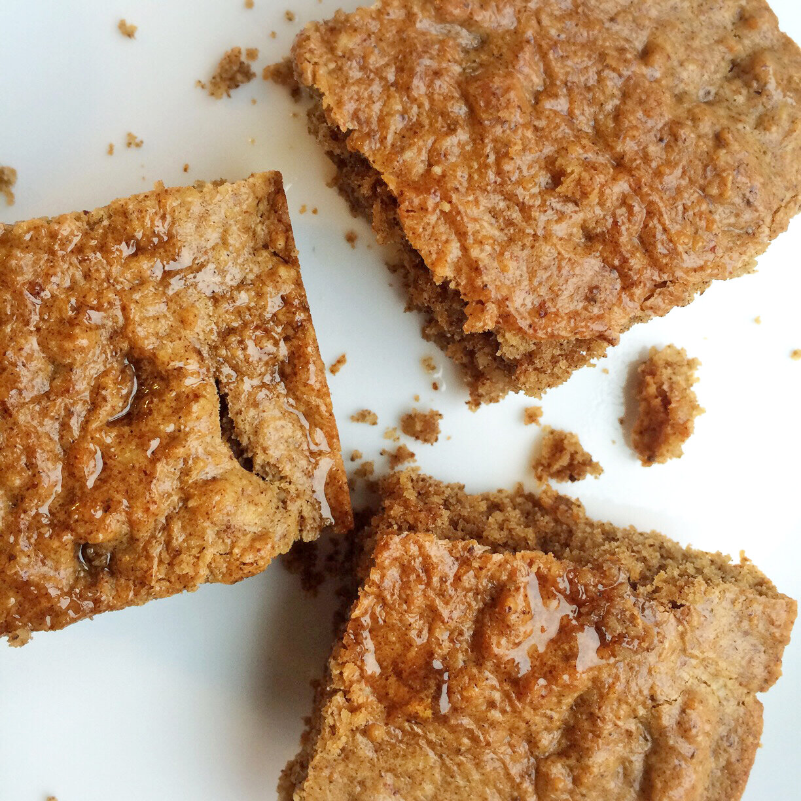
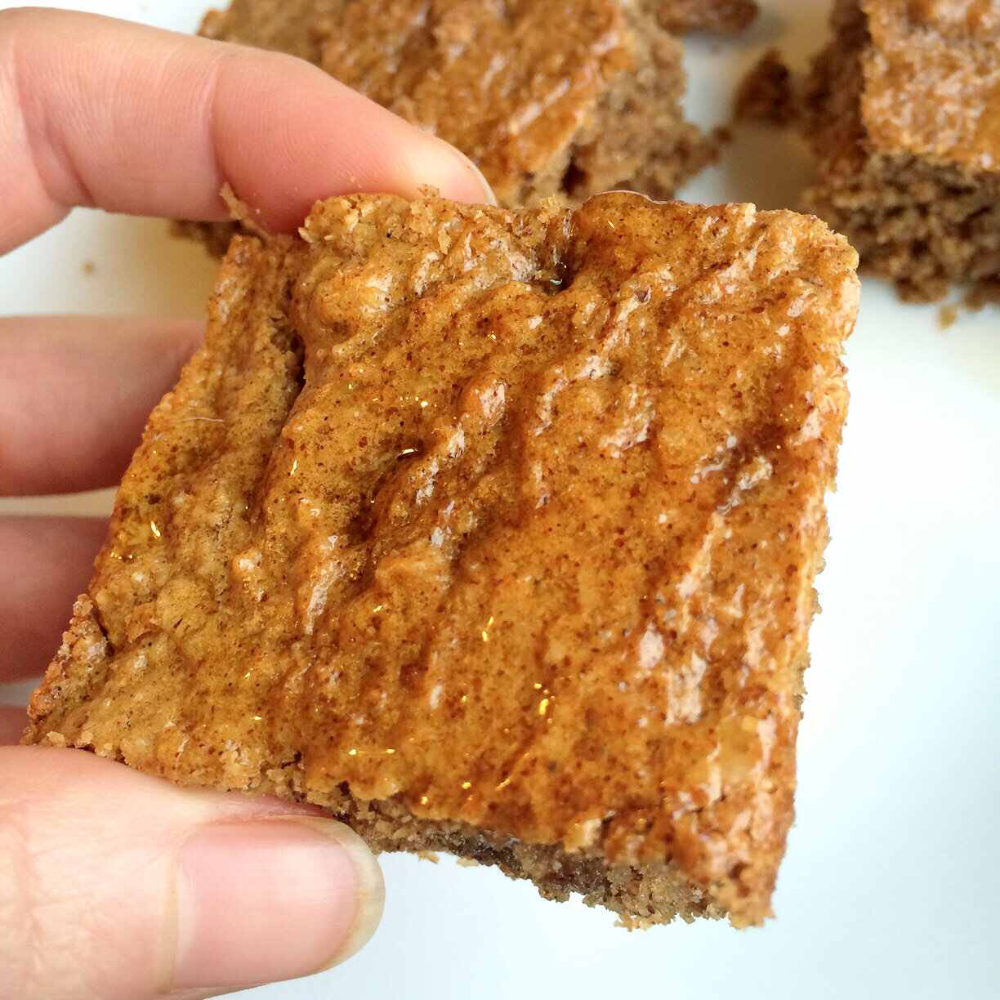
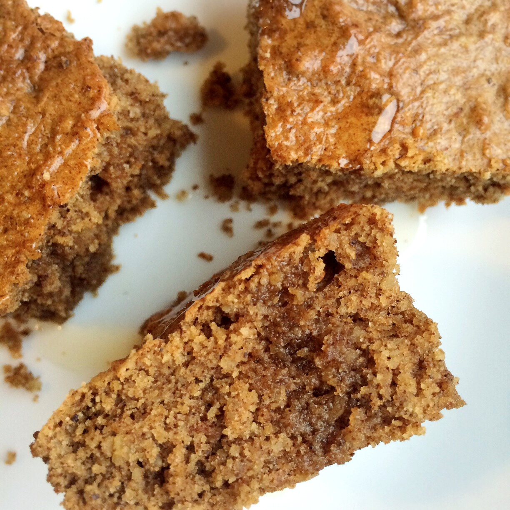

Ginger Pear Blondies (vegan, gluten free)

I'm so excited for the holidays! For some reason, holiday times make me more excited to get creative in the kitchen. Something about the flavors and smells of holiday baking is just so much more enticing. Is it just me? Probably. I saw that Bai is having a virtual holiday party - sharing holiday recipes - and I wanted to get in on the fun!
I've done some baking with Bai 5 before, and it's always so goooood. It's kinda magical. First of all, the entire bottle of Bai is 10 calories. It's antioxidant infused, naturally sweetened, and no artificial colors or preservatives. I like to get low cal flavored drinks sometimes (like zero cal poweraid, flavored water, etc to not get bored of plain water) but they always make my tummy hurt D; I love this drink because it makes me feel so gooooood. And I swear it's like...nectar straight from the Gods. I honestly have no idea how they get so much flavor into it.

Pear flavor is the BEST (okay maybe coconut too, idk... tough call) so I went with pear to make ginger pear blondies!! Looooove the flavor it ended up having #flavorlife!! Sweet, yet earthy from the ginger and spices. One thing I'd say is - they're not gooey/thick like I anticipated. These have more of a cake/cookie texture to them. Delicious nonetheless, but I'm going to be working with this recipe again in the future to create a dense, thick recipe I'm hoping to get. Try these out, and let me know what you think about it!! Holidays <3

Ginger Pear Blondies (vegan, gluten free)
Serves: 8
-
3/4 cup oat flour (ground up raw oats - 60 g)
-
3/4 cup baking stevia
-
1/4 cup almond flour
-
1/4 tsp baking powder
-
1/4 tsp baking soda
-
1/2 tsp ginger
-
1/4 tsp cinnamon
-
1/2 cup almond butter
-
1/3 cup congo pear flavor bai 5
-
1 tsp vanilla extract
-
1/3 cup diced pear
Preheat the oven to 350 F. In a bowl, mix the dry ingredients (oat flour, baking stevia, almond flour, baking powder, baking soda, ginger, and cinnamon). Then add the wet ingredients (almond butter, pear Bai 5, and vanilla extract). Mix until everything is evenly incorporated, creating a thick batter. Lastly, fold in the diced pear pieces. Spray a 4x9 baking dish (9x9 would be fine) with nonstick spray; spread your batter into the dish, creating an even layer. Bake at 350 F for 16-20 minutes. Remove from the oven, let cool 5 minutes, slice into 8 pieces, and enjoy!!
Nutrition info for one serving: 147 calories; 10 g fat, 11 g carbs (3 g fiber), and 6 g protein